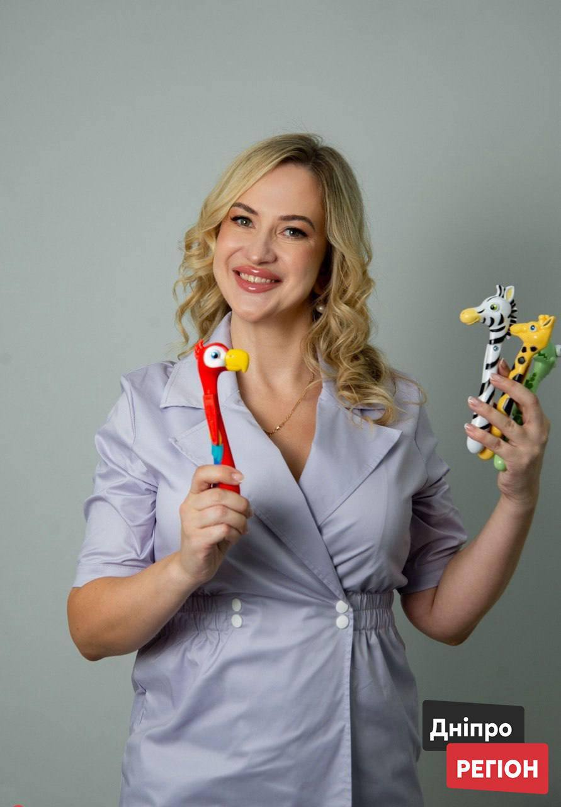

У медичному центрі KoRa ми допомагаємо батькам зрозуміти причини мовленнєвих, поведінкових та емоційних труднощів дитини. Спираємося виключно на доказову медицину, створюємо атмосферу гри без страху «білих халатів» та будуємо чіткий маршрут розвитку і відновлення для всієї родини.

Комплексна діагностика розвитку, корекція поведінкових і мовленнєвих порушень, лікування тіків, РДУГ, РАС та інтерпретація ЕЕГ.
Дитина не відгукується на ім'я, уникає зорового контакту, не говорить фразами за віком або втратила набуті навички.
Труднощі з концентрацією уваги у садочку чи школі, імпульсивність, швидка виснажуваність, рухова розгальмованість.
Мимовільне кліпання, покахикування, гризіння нігтів, нічні страхи, часті пробудження або енурез.
Стереотипні ігри, підвищена чутливість до звуків чи дотиків, складнощі у взаємодії з однолітками.
Тривалі істерики, агресія або автоагресія, страхи, різкі перепади настрою, важка адаптація до змін.
Головний біль, запаморочення, оцінка біоелектричної активності мозку (ЕЕГ) та виключення прихованої епі-активності.
Провідний спеціаліст медичного центру KoRa у Дніпрі. Поєднання двох спеціальностей — дитячої психіатрії та дитячої неврології — дозволяє лікарю бачити цілісну картину стану дитини: від біоелектричної активності мозку та неврологічного статусу до емоційних, когнітивних і поведінкових проявів.
Повний огляд дитини в ігровій формі, збір анамнезу, аналіз документації, постановка діагнозу та детальний план дій.
Оцінка динаміки розвитку чи лікування, аналіз результатів дообстежень (ЕЕГ), корекція маршруту та відповіді на запитання.
Спеціаліст: Рокутова Юлія Валеріївна (дитячий психіатр, невролог)